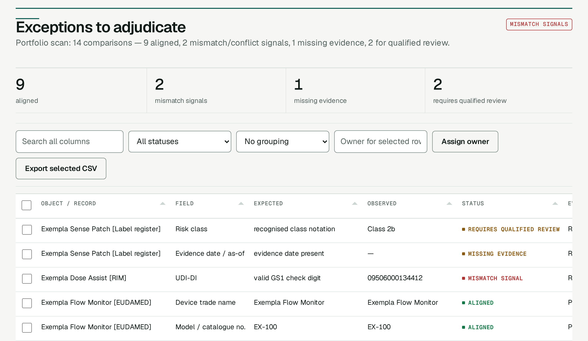

Keep EUDAMED, UDI, certificates, SS(C)P and controlled records aligned when products change.
You changed something about a device. ClinicOps checks whether that change reached every regulatory record in the agreed scope where it should appear — and shows your team exactly what still needs review.
An IFU is revised to rev 12, the label follows, the Declaration of Conformity follows — and the EUDAMED export still says rev 11. Nobody decided that; the check just wasn't run again. Bring the exports and controlled documents you already have; ClinicOps compares them deterministically and returns an exception queue with an owner and closure evidence per row. Nothing to implement, nothing to migrate. Machines compare; your qualified team decides.
No single change yet? Start from a portfolio export →
Runs in your browser. No upload. No sign-up. Nothing you enter leaves the page.
Why records drift
One approved fact — a UDI-DI, an intended purpose, a certificate reference, an SS(C)P revision — lives in EUDAMED, labels, IFUs, declarations, technical documentation and controlled spreadsheets at once. Different owners maintain each copy, and after every change some quietly drift apart. Finding the drift by hand is slow; missing it is worse.
How ClinicOps works
Deterministic comparison, six fixed statuses (aligned, mismatch signal, missing evidence, conflicting evidence, unresolved, requires qualified review), a named owner per exception and a closure record. No scores, no automated regulatory conclusions.
Behind ClinicOps: MSc in Medicine (Translational Medicine), Aalborg University · hands-on pharmacovigilance · Pharma + MedTech documentation experience · native Danish · the experience behind ClinicOps →
One workflow, three ways in
One review, entered at whatever point of readiness you are at — not three products.
Regulatory Change Integrity Review
The full review: one bounded evidence population and one reviewer-ready closure packet — source register, change-surface matrix, exception queue, owner routing and closure evidence. The other entry points lead here.
Regulatory Integrity Scanner
The same comparison as a browser-local tool: check one change or import a device/UDI export. Deterministic, exportable, nothing uploaded.
Portfolio scans & monitoring
Start from a portfolio export instead. Monitoring extends a completed review, and is offered only once that review has shown drift actually recurs.
What you receive
An exception queue, not a score. Each row carries the approved source value, the expected and observed values per surface, a link to the source record, a named owner and next action, and a fixed status — with closure evidence recorded when it closes.

Covers EUDAMED, UDI, certificates, SS(C)P, AR and manufacturer records, labels, IFUs, declarations and language versions. See the use cases →
Boundaries
Specialist context when needed. Independent medical and nursing review can join where an exception needs it, recorded in the evidence trail. How it works →
How a review runs
- Scope. One approved change or one portfolio export, the surfaces to compare and a named regulatory owner.
- Controlled intake. You provide the exports and records inside that scope; only they are compared.
- Work product. ClinicOps runs the comparison and assembles the source register, change-surface matrix and exception queue.
- Qualified human review. Your qualified owners dispose of each exception; specialist review joins only where an exception needs it.
- Delivery. A closure packet: a readable report and a machine-readable export, with closure evidence per exception.
Bring one real change.
The fastest evaluation is a bounded pilot: one product family or approved change, a declared evidence population, a fixed window and a named owner.
Build a scope briefPrefer email? Contact ClinicOps
Inspect the method first: specimen register · transition map sample · research.